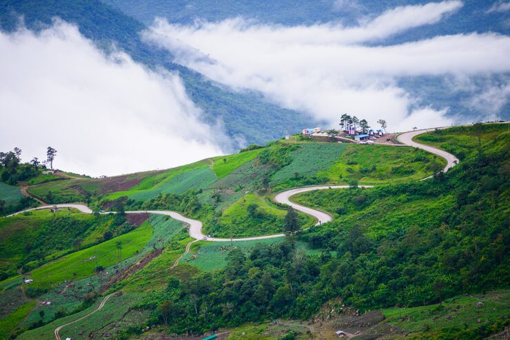

Tea Plantation History
Tea became a leading crop in Valparai during the British plantation era. The cool temperatures, monsoon rainfall and sloping land create excellent growing conditions.

Tea Production
Fresh tea leaves are plucked, withered, rolled, fermented, dried and sorted in nearby factories. Quality depends on leaf grade, elevation, weather and processing technique.
Famous Tea Estates
Stanmore, Iyerpadi, Peria Karamalai and Manambolly are among the well-known estates around Valparai. Each has picturesque roads, factory viewpoints and distinct natural settings.
Estate Landscapes
Rolling rows of tea bushes make ideal sightseeing routes.

Mountain Tea
The region's high-altitude character creates a refreshing flavour.